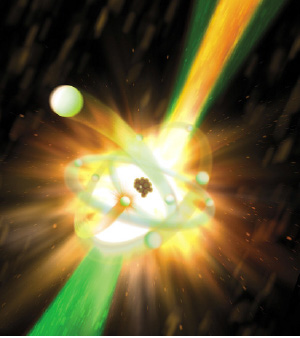

Swords into Plowshares
From Strategic Defense to Structural Biology

As in previous years, we present our annual report on what’s new in the realm of “Swords into Plowshares.” Next year, when the Geula will already be complete B’ezras Hashem, we will have much, much more to report on.
X-RAY LASERS
Ever since the discovery of the laser in 1960 by Ted Maiman, the community of optical physicists began looking for more powerful lasers. This brought them to investigate lasers whose wavelengths are shorter than those of visible light—ultraviolet and ultimately X-rays.
The search for the X-ray laser was on, most of them supported by the Defense Advanced Research Projects Agency (DARPA) of the U. S. Defense Department. After many failed attempts, DARPA stopped funding the project in 1976. After that, Lawrence Livermore National Laboratory, the premiere Defense Department research laboratory, became the center of the search for the X-ray laser. It had both the people and the resources needed to tackle this seemingly insoluble problem. Livermore Laboratory was also involved in the nuclear weapons program which could also deliver the short, intense bursts of energy that might pump an X-ray laser. By the late 1970’s they realized that no conventional sources of X-rays could supply enough energy to make it work.
Then, Peter Hagelstein, a young researcher working on his dissertation at Livermore, came up with an interesting idea. He suggested that they should pick a scheme assuming it would fail, but try to learn something from it.
Eventually they came up with the idea of making an “X-ray laser with a nuclear device.” The idea was tested in a nuclear explosion in 1980 and proved successful. The famous theoretical physicist Edward Teller—the father of the H-bomb—was very excited by the results in which he saw the potential for “third generation nuclear weapons.”
A new sword had been forged.
STAR WARS
At that time the Reagan administration was working on the Strategic Defense Initiative, a system that would defend the U.S. from incoming Soviet intercontinental ballistic missiles. Teller and others pushed to have the X-ray laser be the central component of this system which became known as Star Wars because of the science-fiction-like properties of the X-ray laser.
There was a lot of opposition to the project, firstly from the Russians, of course, but also domestically. The X-ray laser project was not implemented. The Strategic Defense Initiative turned to other nuclear defense options, although underground tests of bomb driven X-ray lasers continued until the United States stopped its test program in 1992.
What was that? Did I say 1992? Wasn’t that the year that the Swords into Plowshares Initiative was proclaimed? To use one of President Reagan’s expressions, “There you go again…” So there must now be a peaceful use of the X-ray laser.
PHOTOGRAPHING PROTEINS
The research on the X-ray laser continued to be developed by the Livermore Laboratory and the Stanford Linear Accelerator Center (SLAC) of Stanford University. Eventually they developed an X-ray laser called the Linac Coherent Light Source (LCLS) which began operating in 2009. It is millions of times brighter than the conventional X-rays used by researchers which are produced by “synchrotrons” (a type of particle accelerator).
Among other things, they are studying the structure of certain proteins that have enormous medical significance. They are called “G protein-coupled receptors” or GPCRs for short. It is estimated that 40% of modern medicines are designed to target GPCRs. Disorders linked to GPCRs include hypertension, asthma, schizophrenia and Parkinson’s disease. Because of their vital role in regulating cells’ signaling and response mechanisms and their importance to human health, the 2012 Nobel Prize in Chemistry was awarded for advances in receptor-related research.
Researchers have now been able to get X-ray images of some of these proteins before using X-rays from synchrotrons. But in order to get a clear picture they have to produce large crystals of the protein. Otherwise, the photograph will be just a blur. The problem is, as one researcher put it, “With really challenging proteins…you often need years to develop crystals that are large enough to study at synchrotron X-ray facilities.” Because of its greater power the LCLS can get a clear picture from much smaller crystals.
Also, the crystals have to be frozen to a very low temperature or else the heat of the X-ray will just destroy them. With the LCLS the crystals can be at room temperature.
So here is the klutz kashye: If the crystals must be frozen so that the conventional X-rays don’t destroy it, and the LCLS is millions of times more powerful than the conventional X-rays, how can they just keep the crystals at room temperature?
The answer is that the LCLS certainly does destroy the crystal—it destroys it almost to nothingness. But it is so ultrafast that it captures an image of the crystal before it has a chance to blow up!
So far, scientists have been able to map the structures of fewer than two dozen of the estimated 800 GPCRs in humans. With LCLS they will be able to photograph the structures of many more.
The experiment that caught the attention of the scientific community, published in the December 20, 2013 issue of Science Magazine, examined the structure of the human serotonin receptor, which plays a role in learning, mood and sleep and is the target of drugs that combat obesity, depression and migraines. The leader of the experiment, Vadim Cherezov, reported, “For the first time we have a room-temperature, high-resolution structure of one of the most difficult to study but medically important families of membrane proteins.”
MOSHIACH—NOW!
Having spoken of Moshiach and Star Wars, I conclude with a story of a Lubavitcher scientist who works for the Defense Department, Dr. Naomi Zirkind of Morristown, New Jersey. Her Ph.D. thesis research at MIT was paid for by the Star Wars program. “When I was working on my thesis,” she said, “I used to wonder: What happens if Moshiach comes before I finish my thesis—then I won’t be able to finish it. But I concluded that Moshiach should still come right away.”
Moshiach will come now—the Rebbe Melech HaMoshiach will be completely revealed—and Dr. Zirkind will report to us on how all the military technology of the Defense Department has been transformed for peaceful uses.
Prof. Shimon Silman. "Swords into Plowshares." Beis Moshiach, no. 912 (January 24, 2014).